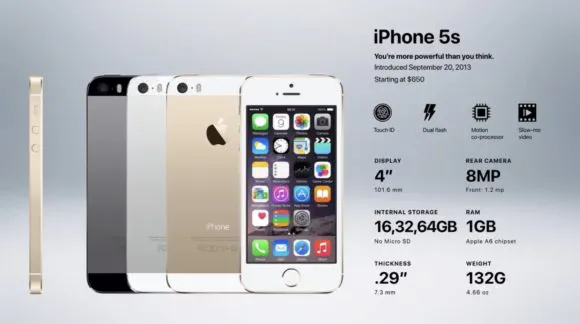
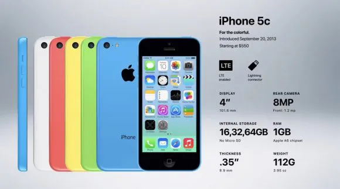

Generation 7: iPhone 5S and iPhone 5C
iPhone 5S and 5C Release Date: September 20, 2013
Apple released the iPhone 5S and 5C in 2013. This was the first time that Apple released two iPhones at the same time. The iPhone 5S was a high-end phone with a lot of new features, while the iPhone 5C was a more affordable phone with a plastic body. The release of two iPhones was a way for Apple to compete with other phone companies, such as Samsung. Samsung was releasing phones that were similar to the iPhone, but at a lower price. By releasing the iPhone 5C, Apple was able to offer people a more affordable option. The differences between the iPhone 5S and 5C show that Apple was starting to change its perspective. In the past, Apple had only released one iPhone per year, and it was always a high-end phone. However, with the release of the iPhone 5C, Apple was starting to recognize that there was a market for more affordable iPhones.
 Specification: 5C
- 10 hours talk time on 3G (up from 8)
- 10 hours of web browsing time on 3G (up from 8)
- 10 hours of web browsing time on LTE (up from 8)
- 10 hours of battery life on WiFi (no change)
- 10 hours of battery life for videos (no change)
- 40 hours of battery life for just music (no change)
Specification: 5S
- An 8-megapixel rear camera with an improved aperture and two-tone flash to improve photo quality in low light
- An Apple A7 dual-core, 64-bit, 1.4 GHz processor with 1GB RAM
- An M7 Motion Coprocessor which helps the phone process sensory data, such as movement and orientation.
- iOS 7
- 10 hours talk time on 3G (up from 8)
- 10 hours of web browsing time on 3G (up from 8)
- 10 hours of web browsing time on LTE (up from 8)
- 10 hours of battery life on WiFi (no change)
- 10 hours of battery life for videos (no change)
- 40 hours of battery life for just music (no change)
- 16GB ($199), 32GB ($299), 64GB($399)
iPhone 5S and 5C Countries and Carriers
The iPhone 5 did not sell as well as expected, despite selling 5 million phones in the first weekend. This may have been why Apple released two phones at the same time the following year. The iPhone 5S and 5C sold just over 9 million phones on the day they were released, which was a success for Apple.